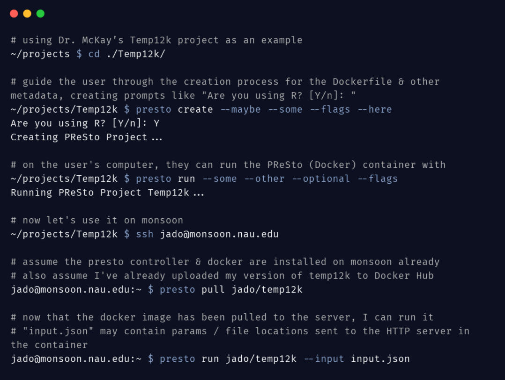

Our Solution
This tool, which we call the Fossilized Controller, will provide a user interface to help create, run, and manage PReSto containers. The main function of the Fossilized Controller is to guide scientists through the process of creating their container. The purpose of our tool is that instead of having to learn about containerization, scientists can use our tool to create an easy way to share their climate models. Ample documentation will be provided to the scientists so that they can have a good understanding of how to use the tool. The benefits of using our tool is that instead of having to learn Docker, they simply have to run our commands that create the containers for the scientists.
Our solution to help paleoclimatologists is a tool to facilitate the containerization of their climate reconstruction programs into what we call a PReSto Container. This is a regular Docker container but has components special to the Fossilized Controller. The first component of a PReSto container is the climate model program within it. The scientist only has to pass any needed required parameters through the Fossilized Controller to the PReSto container. From there, the container can also return output files from the model. The user will have minimal involvement for the creation of the PReSto container aside from some prompts in the beginning.
The controller will be downloaded through our Github repository, and once installed can be used to start the containerization process and eventually upload the container to a hosting service, such as docker hub. To aid in the use of our tool we also plan to host documentation on a website containing all of the features as well as technical internals, making it simple to use. The last part of our solution is the ability to connect the Controller to external services, such as a website for viewing the resulting climate reconstruction.

Everything comes together to create our entire system. From there, scientists can use the Fossilized Controller to send files to the container as well as receive output files. Climate reconstruction programs are written in a number of different languages, mainly Python, R, and Matlab, and our tool should work for all of them. To fulfill this, the communication between the Fossilized Controller and PReSto Containers doesn’t use any programming language specific features - it uses an HTTP connection. This allows us to ignore the contents of the container as long as it properly communicates with an HTTP client in our Controller. In order to achieve this, we are creating adapter libraries. Scientists need to add a few lines of code provided to them that will create a local server within the container so that the Fossilized Container can establish a connection to it.